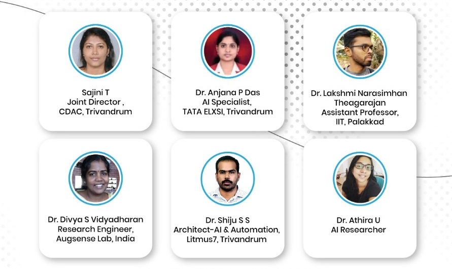

Judging Panel

1. Dr. Divya S Vidyadharan, Research Engineer, Augsense Lab, India:
Ms. Divya S. Vidyadharan works as a Research Engineer at Augsense Lab, India. She focuses on Visual Perception , and Computer Vision based Weather Forecasting. She received her Ph.D. Degree in Computer Science and Engineering from the University of Kerala, M.Tech in Computer Science with specialization in Digital Image Computing, and B.Tech degree in Computer Science and Engineering from SCT College of Engineering, Kerala, India. Her research interests include Computer Vision, Robotic Perception, Remote Sensing and Digital Image Forensics. Prior to joining Ph.D., she was with the Resource Centre for Cyber Forensics at CDAC-Trivandrum, where she was involved with the development of Cyber Forensic Tools and has trained around 2000 officials from various Law Enforcement Agencies. She has also delivered technical talks on Digital Image Forensics at various Faculty Development Programmes organized in Kerala. She is a senior member of the IEEE Signal Processing Society, IEEE Geoscience and Remote Sensing society and a member of Computer Society of India.
2. Sajini T, Joint Director ,CDAC, Trivandrum:
Sajini T, currently holding the position of Joint Director at CDAC, Trivandrum. She is having 16+years of experience in research and development. She completed MTech in Electronics and Communications specialized in signal processing. Her research focus is mainly on Speech processing - Speech Synthesis, speech adaptation, Speech Recognition, Speech to Speech Translation, Natural Language Processing, Machine Learning and Acoustic phonetics, Assistive Tool, Augmentative alternative communication, Analytics.
3. Dr. Anjana P Das, AI Specialist, TATA ELXSI, Trivandrum:
Anjana P Das is a Technical Specialist at Tata Elxsi Ltd and exploring artificial intelligence based solutions for automotive applications. She acquired PhD in Computer Science and Engineering. Anjana's research expertise are in the fields of sensor networks, localization, intelligent systems, driver assistance systems and automotive bigdata. She has published papers in several prestigious journals, and conference proceedings. She has served as Guest Editor for special issues in few journals and technical program committee member for a few international conferences and reviewer for several reputed international journals. She is a Member of IEEE and ACM. She is currently serving as the secretary of IEEE Communication Society, Kerala Chapter.
4. Dr. Lakshmi Narayanan, Assistant Professor, IIT, Palakkadu:
5. Dr. Athira U, AI Researcher:
Athira U is currently working as a senior technical lead of AI team in digital emerging technology wing of a prominent multinational company. She is a sanguine researcher focussed in the area of natural language processing and document intelligence. She has experience in industrial automation and human in loop machine learning technologies that contribute to innovation at scale in the organization.She has been a primary author to several technical publications in prestigious journals. She has also delivered several technical and motivational talks promoting digital adaptability in organizational realms.
6. Dr. Shiju S S, AI ,Ligmus:
Dr. Shiju S S is currently holding the position of Technical Architect-Machine Learning in IBS Software, Trivandrum and designing end to end AI based solutions. He did his doctoral research from Indian Institute of Space Technology, Trivandrum in the field of Machine Learning. He has publications in coveted international journals. His natural inclination is towards emerging technology and research, however, he is an avid programmer with a strong mathematical understanding of AI algorithms and Big Data models. His key areas of interest are Time Series Analysis, Natural Language Processing, and Deep Recurrent neural networks.